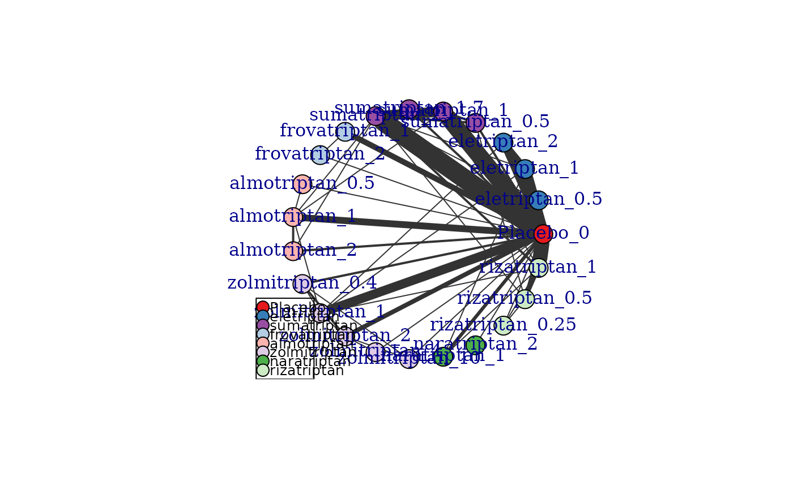

Create an mbnma.network object
mbnma.network.RdCreates an object of class("mbnma.network"). Various MBNMA functions can subsequently be applied
to this object.
# S3 method for class 'mbnma.network'
plot(
x,
level = "treatment",
v.color = "connect",
doselink = NULL,
layout = igraph::in_circle(),
remove.loops = FALSE,
edge.scale = 1,
v.scale = NULL,
label.distance = 0,
legend = TRUE,
legend.x = "bottomleft",
legend.y = NULL,
...
)
mbnma.network(data.ab, description = "Network")Arguments
- x
An object of class
mbnma.network.- level
A string indicating whether nodes/facets should represent
"treatment"or"agent"in the plot. Can be used to examine the expected impact of modelling dose-response in terms of network connectivity.- v.color
Can take either
"connect"(the default) to indicate that nodes should only be coloured if they are connected to the network reference treatment (indicates network connectivity) or"agent"to colour nodes by agent.- doselink
If given an integer value it indicates that connections via the dose-response relationship with placebo should be plotted. The integer represents the minimum number of doses from which a dose-response function could be estimated and is equivalent to the number of parameters in the desired dose-response function plus one. If left as
NULL(the default), connections to placebo via dose-response relationships will not be included.- layout
An igraph layout specification. This is a function specifying an igraph layout that determines the arrangement of the vertices (nodes). The default
igraph::as_circle()arranged vertices in a circle. Two other useful layouts for network plots are:igraph::as_star(),igraph::with_fr(). Others can be found inlayout_- remove.loops
A boolean value indicating whether to include loops that indicate comparisons within a node.
- edge.scale
A number to scale the thickness of connecting lines (edges). Line thickness is proportional to the number of studies for a given comparison. Set to 0 to make thickness equal for all comparisons.
- v.scale
A number with which to scale the size of the nodes. If the variable
N(to indicate the numbers of participants in each study arm) is included in the dataset then the size of the nodes will be proportional to the number of participants within a treatment/agent in the network.- label.distance
A number scaling the distance of labels from the nodes to improve readability. The labels will be directly on top of the nodes if the default of 0 is used. Option only applicable if
layout_in_circleis set toTRUE.- legend
A boolean object to indicate whether or not to plot a legend to indicate which node colour corresponds to which agent if
v.color="agent". Default isTRUE.- legend.x, legend.y
The x and y co-ordinates to be used to position the legend. They can be specified by keyword or in any way which is accepted by
xy.coords.- ...
Options for plotting in
igraph.- data.ab
A data frame of arm-level data in "long" format containing the columns:
studyIDStudy identifiersdoseNumeric data indicating the dose (must take positive values)agentAgent identifiers (can be numeric, factor or character)yNumeric data indicating the aggregate response for a continuous outcome. Required for continuous data.seNumeric data indicating the standard error for a given observation. Required for continuous data.rNumeric data indicating the number of responders within a study arm. Required for binomial or poisson data.nNumeric data indicating the total number of participants within a study arm. Required for binomial data or when modelling Standardised Mean DifferencesENumeric data indicating the total exposure time for participants within a study arm. Required for poisson data.classAn optional column indicating a particular class code. Agents with the same identifier must also have the same class code.standsdAn optional column of numeric data indicating reference SDs used to standardise treatment effects when modelling using Standardised Mean Differences (SMD).
- description
Optional. Short description of the network.
Value
plot(): An object of class("igraph") - any functions from the igraph package
can be applied to this object to change its characteristics.
mbnma.network(): An object of class("mbnma.network") which is a list containing:
descriptionA short description of the networkdata.abA data frame containing the arm-level network data (treatment identifiers will have been recoded to a sequential numeric code)studyIDA character vector with the IDs of included studiesagentsA character vector indicating the agent identifiers that correspond to the new agent codes.treatmentsA character vector indicating the treatment identifiers that correspond to the new treatment codes.classesA character vector indicating the class identifiers (if included in the original data) that correspond to the new class codes.
Details
The S3 method plot() on an mbnma.network object generates a
network plot that shows how different treatments are connected within the
network via study comparisons. This can be used to identify how direct and
indirect evidence are informing different treatment comparisons. Depends on
igraph.
Agents/classes for arms that have dose = 0 will be relabelled as "Placebo".
Missing values (NA) cannot be included in the dataset. Single arm studies cannot
be included.
Methods (by generic)
plot(mbnma.network): Generate a network plot
Examples
# Create an mbnma.network object from the data
network <- mbnma.network(triptans)
#> Values for `agent` with dose = 0 have been recoded to `Placebo`
#> agent is being recoded to enforce sequential numbering
# Generate a network plot from the data
plot(network)
# Generate a network plot at the agent level that removes loops indicating comparisons
#within a node
plot(network, level="agent", remove.loops=TRUE)
# Generate a network plot at the treatment level that colours nodes by agent
plot(network, v.color="agent", remove.loops=TRUE)

# Generate a network plot that includes connections via the dose-response function
# For a one parameter dose-response function (e.g. exponential)
plot(network, level="treatment", doselink=1, remove.loops=TRUE)
#> Dose-response connections to placebo plotted based on a dose-response
#> function with 0 degrees of freedom
# For a two parameter dose-response function (e.g. Emax)
plot(network, level="treatment", doselink=2, remove.loops=TRUE)
#> Dose-response connections to placebo plotted based on a dose-response
#> function with 1 degrees of freedom
# Arrange network plot in a star with the reference treatment in the centre
plot(network, layout=igraph::as_star(), label.distance=3)
#### Plot a network with no placebo data included ####
# Make data with no placebo
noplac.df <- network$data.ab[network$data.ab$narm>2 & network$data.ab$agent!=1,]
net.noplac <- mbnma.network(noplac.df)
#> agent is being recoded to enforce sequential numbering
# Plotting network automatically plots connections to Placebo via dose-response
plot(net.noplac)
#> Warning: The following treatments/agents are not connected
#> to the network reference:
#> 4_1
#> 4_2
# Using the triptans headache dataset
print(triptans)
#> # A tibble: 182 × 6
#> studyID AuthorYear n r dose agent
#> <dbl> <fct> <int> <dbl> <dbl> <fct>
#> 1 1 Tfelt-Hansen P 2006 22 6 0 placebo
#> 2 1 Tfelt-Hansen P 2006 30 14 1 sumatriptan
#> 3 2 Goadsby PJ 2007 467 213 1 almotriptan
#> 4 2 Goadsby PJ 2007 472 229 1 zolmitriptan
#> 5 3 Tuchman M2006 160 15 0 placebo
#> 6 3 Tuchman M2006 174 48 1 zolmitriptan
#> 7 4 Cady G 2006 177 55 0 placebo
#> 8 4 Cady G 2006 351 200 1 rizatriptan
#> 9 5 Cady G 2006 167 52 0 placebo
#> 10 5 Cady G 2006 331 195 1 rizatriptan
#> # ℹ 172 more rows
# Define network
network <- mbnma.network(triptans, description="Example network")
#> Values for `agent` with dose = 0 have been recoded to `Placebo`
#> agent is being recoded to enforce sequential numbering
summary(network)
#> Description: Example network
#> Number of studies: 70
#> Number of treatments: 23
#> Number of agents: 8
#> Median (min, max) doses per agent (incl placebo): 4 (3, 6)
#> Agent-level network is CONNECTED
#>
#> Ttreatment-level network is CONNECTED
#>
plot(network)